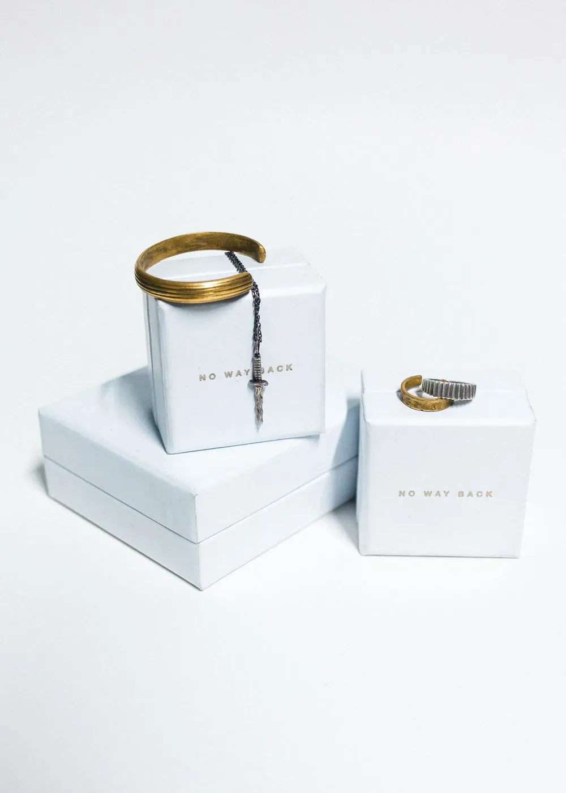

Le service, c’est la moitié du bijou
Gravure, retouche, réparation, emballage, livraison : tout ce qui fait qu’une pièce est facile à aimer — et facile à vivre.
Gravure à la main
Dates, prénoms, coordonnées, une phrase entière : notre graveur travaille au burin comme à la machine, en écriture cursive, bâton ou chiffrée. Le premier passage est offert sur toute pièce de la maison.
Positions possibles : intérieur de jonc, dos de médaille, platine de fermoir — nous vous conseillons selon la pièce.
Retouche de taille
Vos doigts ont changé, pas vos sentiments. Bagues et joncs sont ajustés à l’atelier, de 4 à 12 tailles selon la structure de la pièce, sans marque visible sur les sertis.
Première retouche offerte pendant l’année qui suit l’achat d’une bague neuve.
Réparation & restauration
Chaîne cassée, pierre perdue, écrin de famille rongé par le temps : nous réparons toutes les marques et toutes les époques. Chaque restauration fait l’objet d’un rapport photo avant / après, et d’un devis fixe validé par vous.
Les pièces anciennes sont traitées par Augustin Lormeau, spécialiste des montures d’avant 1970.
Emballage cadeau
Écrin laqué, pochette tissée, ruban de soie et mot manuscrit à votre dictée : l’emballage est offert et soigné comme une pièce de plus. Pour les demandes pressées, l’écrin neutre sans prix est la règle — jamais d’étiquette visible.
Livraison assurée
Chaque envoi voyage en transport assuré spécifique joaillerie, contre signature, dans un colis neutre. France : 3 à 5 jours ouvrés, offerts dès 500 €. Europe : 5 à 8 jours, 25 €. Reste du monde : sur devis. Retrait en boutique possible sur rendez-vous.
Retours sous 30 jours
Un doute, une taille, une occasion manquée ? Vous disposez de 30 jours pour nous retourner toute pièce neuve, port compris, contre remboursement intégral. Seules exceptions logiques : pièces gravées à votre demande et créations sur mesure.
Entretien à vie
Toute pièce signée Éclat d’Or revient à l’atelier quand elle veut, aussi souvent qu’elle veut : bain d’ultrasons, contrôle des griffes, re-lustrage, remise en état du fermoir. Offert, sans condition de date ni de facture retrouvée — la pièce suffit.
Un doute sur une pièce, une taille, une réparation ?
Envoyez-nous une photo : le devis est gratuit et sans engagement, sous 72 heures.